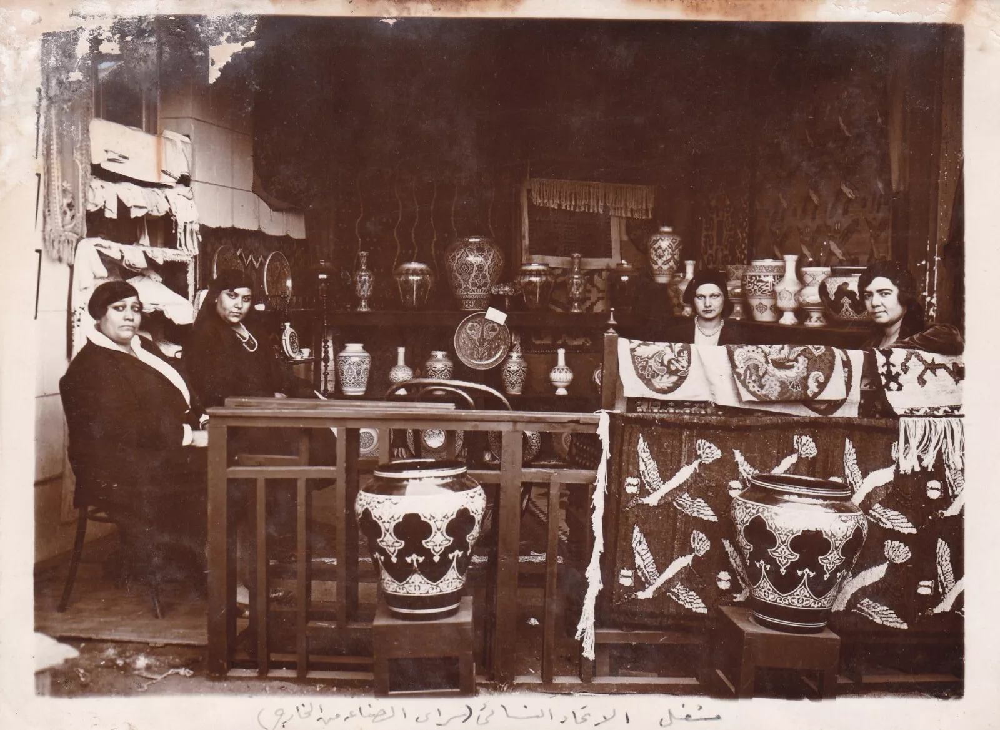
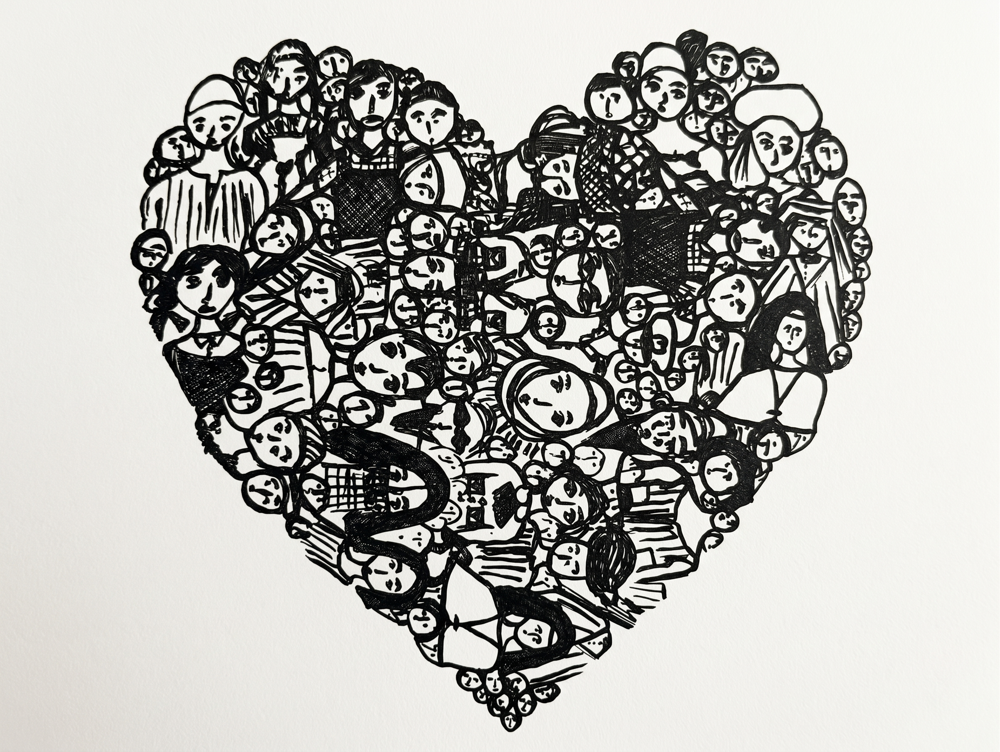

Collect
Bring material together with its source and context.
GMD / A CULTURAL DATA COMPANY
GMD builds ways to collect, organize, segment and distribute Egyptian information—so culture, research and business can meet on stronger digital foundations.
See how the data connects ↗
OUR PURPOSE
Egyptian knowledge lives across many sources and formats. GMD brings it into clearer relation: documenting where information comes from, shaping records people can navigate, and creating routes into the material.
That work can serve cultural collections, public knowledge, research and businesses. It starts with what is known, preserves what is uncertain, and leaves room for better evidence to arrive.

A PURPOSE, NOT A CLAIMED TIMELINE
GMD’s company story is expressed here through its work: making cultural and commercial information easier to understand and use. This page does not invent a founding date or a history not yet documented in the source materials.
We approach each project as a connection between material, structure and audience. The result can take different forms, but it should remain clear what the information says, where it came from and how it can be used.
HOW THE FOUNDATION MOVES
The sequence stays visible from source to use. Each stage adds structure without losing the trail back to the information.
Bring material together with its source and context.
Describe records and make relationships legible.
Group and index information around real questions.
Connect data with products, services and public use.
Different teams need different ways into the same landscape. GMD connects the underlying information to the work people need to do.

MANY PEOPLE / ONE SHARED FIELD
The supplied drawing gathers a crowd of hand-drawn faces and bodies into a heart-shaped composition. It offers a visual counterpoint to GMD’s work: individual stories remain distinct while their relationships can be considered together.
Preserve source context and build records that invite careful discovery.
Make structured information easier to compare, navigate and question.
Connect useful business information, products and services with clearer data foundations.